现在让我们深入了解 Flexbox 的缩放 – 以及如何利用它来构建漂亮的自适应布局。
# 属性 #1: Flex-Basis
在上一篇文章中，我们主要了解了适用于容器元素的属性。这一次，我们专门介绍如何控制子元素 (flex 项) 的大小。
我想，我们这次介绍的第一个属性是 Flexbox 教程中最不好解释的属性之一。
但 – 不要担心。 它实际上很简单。
flex-basis 控制一个子元素 (flex 项) 的默认大小，但是它可以被其他的 Flexbox 属性影响（稍后详细介绍）。
在下面的 GIF 中，你会发现它可以与 width 属性互换（等价）：
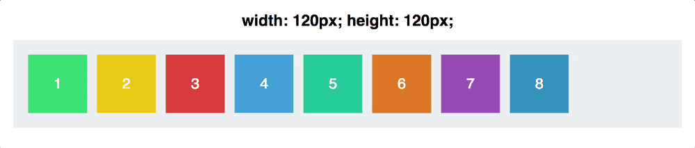
然而，flex-basis 和 width 有什么不同呢？ flex-basis 对应于 flex 轴线而言的：
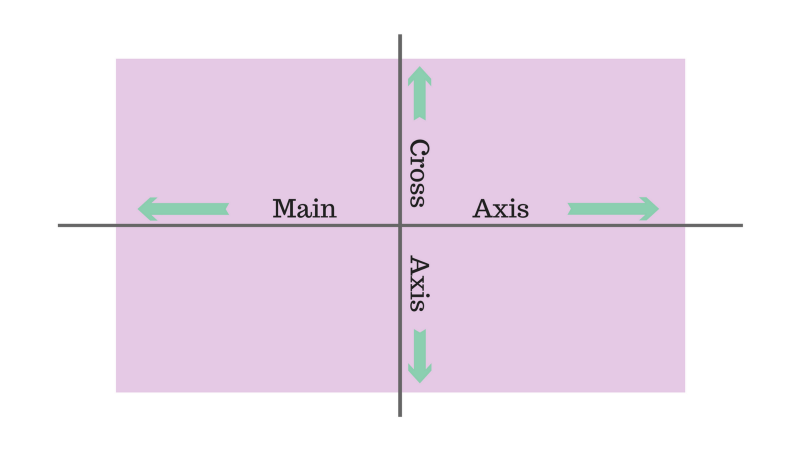
flex-basis 影响元素在主轴 (main axis) 上的大小。
让我们看看当保持 flex-basis 不变的情况下，改变主轴方向，会发生什么。
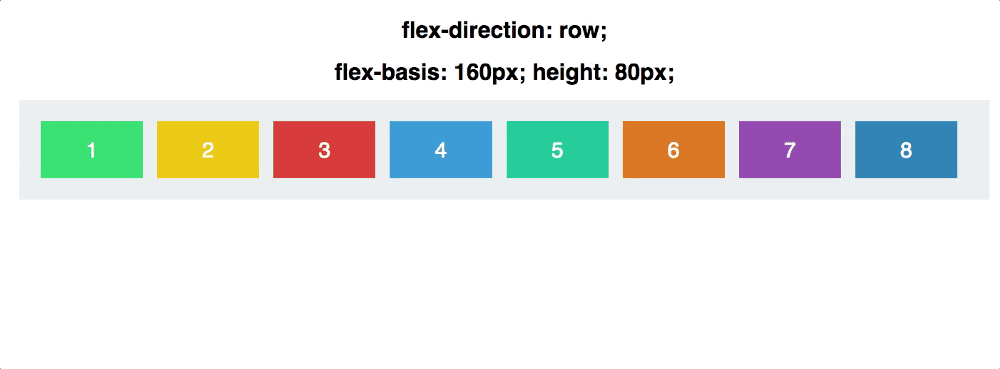
注意，我们必须从手动将 height 切换到设置 width 属性。 因此， flex-basis 是根据 flex-direction 的不同来确定 width 或 height 的。
# 属性 #2: Flex Grow（拉伸）
现在我们要更复杂一点了。
首先，让我们将所有的矩形子元素 (flex 项) 设置为相同的 width ，120px：
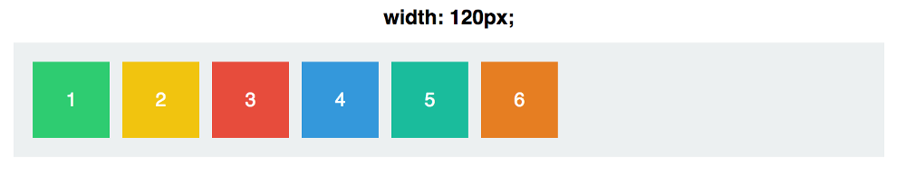
现在，涉及到名为 flex-grow 的属性，其默认值为 0 。这意味着矩形子元素 (flex 项) 不允许自动占据容器中剩余的空间。
这意味着什么呢？好吧，让我们尝试把为每个矩形子元素 (flex 项) 的 flex-grow 设置为 1 ：
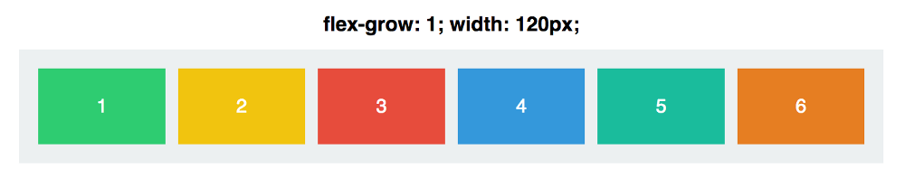
所有矩形子元素 (flex 项) 共同占据了整个容器的宽度，它们之间的间隔也都是均匀分布。 flex-grow 值覆盖了 width 值。
然而，关于 flex-grow 令人困惑的是其值实际上意味着什么呢？ flex-grow: 1 是什么意思呢？
嗯，如果设置每个矩形子元素 (flex 项) 的 flex-grow 属性值为 999 ，让我们来看一下效果：
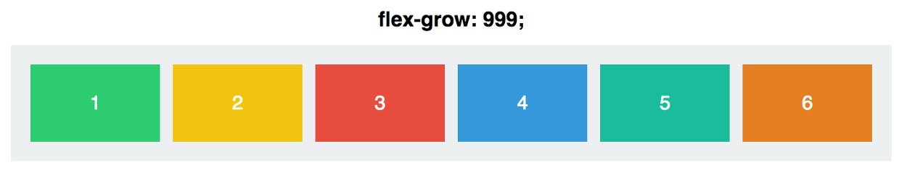
正如你所看到的，完全一样。
这是因为 flex-grow 不是绝对值 – 它是一个相对值。
对于每个矩形子元素 (flex 项) 来说，重要的不是其 flex-grow 值有多大，而是这个值与其他矩形子元素 (flex 项) 的 flex-grow 值相比较，相对值有多大。
如果我们将每个矩形子元素 (flex 项) 设置为 flex-grow: 1 ，然后调整第 3 个矩形子元素的 flex-grow 值，那么我们可以看到改变，如图：
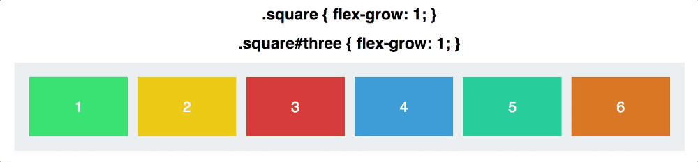
要真正理解这里到底发生了什么，让我们快速过一边简单的数学知识。
每个矩形子元素 (flex 项) 的 flex-grow 初始值都是 1 。如果我们将每个矩形子元素 (flex 项) 的 flex-grow 相加起来，总和为 6 。因此容器的总宽度被平均分成了 6 份。每个矩形子元素 (flex 项) 增长到填充容器可用空间的 1/6。
当我们将第 3 个矩形子元素的 flex-grow 设置为 2 时，容器现在被分成了 7 等份，因为所有 flex-grow 属性是：1 + 1 + 2 + 1 + 1 + 1。
第 3 个矩形子元素占了整个容器空间的 2/7，其他的占了 1/7。
同理，当设置第 3 个矩形子元素的 flex-grow: 3 的时候，整个容器宽度被分成了 8 等份（1 + 1 + 3 + 1 + 1 + 1），第 3 个矩形子元素占了 3/8，其他的占了 1/8。
以此类推。
flex-grow 只和比例相关，如果我们设置第 3 个矩形子元素 flex-grow: 12 ，其余每个方块的 flex-grow: 4 ；跟第三个设置成 3，其他的设置成 1 得到同样的效果，见下图：
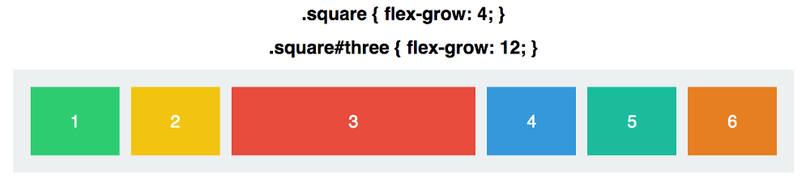
重要的是每个矩形子元素的 flex-grow 与其他矩形子元素成比例的。
最后一点，请记住，就像 flex-basis 一样， flex-grow 只适用于主轴 (main axis)。我们的矩形子元素只会影响宽度，除非我们将 flex-direction 设置为 column 。
# 属性 #3: Flex Shrink（收缩）
flex-shrink 正好和 flex-grow 相反，它是决定矩形子元素允许收缩多少的。
它的主要用途是指定哪些 flex 项 要缩小，哪些 flex 项 不要缩小。默认情况下，每个矩形子元素 (flex 项) 都为 1 – 这意味着每个矩形子元素将随着容器收缩而收缩。
让我们看看实际情况。 在下面的 GIF 中，每个矩形子元素 (flex 项) 的 flex-grow 为 1 ，所以他们填充满了整个容器，并且 flex-shrink 为 1 ，所以他们被允许收缩。
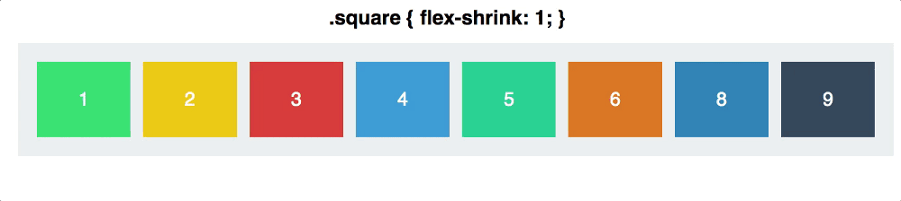
现在让我们将第 3 个矩形子元素的 flex-shrink 设置为 0 。它是禁止收缩，所以它会随着容器拉伸而拉伸，但是当容器收缩的时候，当其宽度收缩至设置的 120px 时，它不再允许收缩。
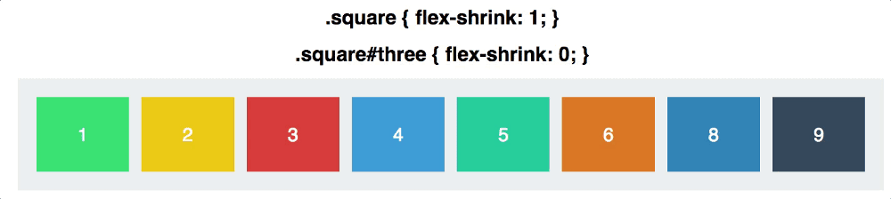
flex-shrink 的默认值是 1 – 这意味着你的元素默认允许收缩，除非你告诉他们不允许收缩！
同样， flex-shrink 约为比例。如果一个矩形子元素的 flex-shrink 为 6 ，并且其余 flex-shrink 为 2 ，那么这个矩形子元素随着容器空间的收缩，将以 3 倍于其他矩形子元素的速度缩小。
注意这里的措辞：3x（3 倍） flex-shrink 的矩形子元素将缩小 3 倍。这并不是收缩 1/3 的宽度。
稍后，我们将深入了解元素是如何收缩和拉伸的。但首先，让我们了解最后一个属性，把这些东西都串起来。
# 属性 #4: Flex
flex 是 flex-grow ， flex-shrink 和 flex-basis 的缩写 – 所有这些都放在一起。
它的默认值是 0 （grow）， 1 （shrink）和 auto （basis）。
我们把上一个例子简化成只有两个矩形子元素 (flex 项)。
下面是它们的属性：
CSS 代码:
1 | .square#one { |
两个矩形子元素 (flex 项) 具有着相同的 flex-basis 。这意味着如果它们有足够的空间（容器的空间是 600px 加上 margin 和 padding ），它们的宽度都是 300px 。
但随着容器的拉伸，第 1 个矩形子元素 (flex 项)（具有更高的 flex-grow ）将以两倍于第 2 个矩形子元素的速度增长。 随着容器的收缩，第 2 个矩形子元素（具有更高的柔性收缩）将会以两倍于第 1 个矩形子元素的的速度收缩。
实际效果如下图：
# flex 项如何收缩和拉伸
这里有什么可能会混淆：当第 1 个矩形子元素拉伸时，并没有拉伸到第 2 个矩形子元素的两倍大小。同样，当第 2 个矩形子元素缩小时，它不缩小到第 1 个矩形子元素的一半大小 – 即使 flex-shrink (理解为收缩比率) 为 2 比 1 。
这两个属性并不是说它们的大小比例是 2:1 或者 1:2 ，而是说它们的收缩或拉伸速度的比率。
# 简单的数学计算
容器的初始大小为 640px 。在容器的每一边占用 20px 的 padding ，剩下的空间足够让两个矩形子元素满足 flex-basis 等于 300px。
当容器设置为 430px 时，空间收缩了 210px 。(注：两个矩形子元素的 flex-shrink 加起来为 3 ，那么， ) 第 1 个矩形子元素的 flex-shrink 为 1 , 也就是收缩了 70px 。 第 2 个矩形子元素的 flex-shrink 为 1 也就是收缩了 140px 。
当容器收缩到 340px 时，空间收缩了 300px。第 1 个矩形子元素的收缩了 100px，第 2 个矩形子元素的收缩了 200px 。
容器收缩的空间根据它们各自的 flex-shrink 收缩率（2:1）的比率来分割。
这对于 flex-grow 也是同样的。 当容器拉伸到 940px 时，也就是说空间拉伸 300px ，第 1 个矩形子元素被拉伸 200px ，，第 2 个矩形子元素被拉伸 100px 。
当涉及到 flex 属性时，其实它们说的都是比例。
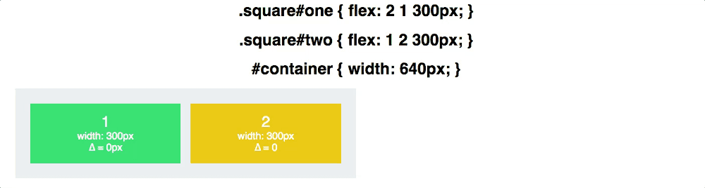
在上面的 GIF 中，您可以看到宽度是如何根据比率进行调整的，增量（Δ）显示与 flex-basis 相比的差异。
# 结论
作为最后的总结： flex-basis 是控制元素在发生缩放之前，沿着主轴方向的大小。 flex-grow 指的是在元素拉伸时，和兄弟元素之间相比的拉伸比例。而 flex-shrink 指的是在元素收缩时，和兄弟元素之间相比的收缩比例。
我们还有更多的 Flexbox 属性要介绍 – 在接下来的几周里请密切关注。
非常感谢阅读！ 如果你有一些特定的概念（ Flexbox 或其他），你想看到在类似的文章中解释，请留言。
原文地址：https://medium.freecodecamp.com/even-more-about-how-flexbox-works-explained-in-big-colorful-animated-gifs-a5a74812b053#.9hknw1qpd